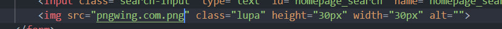

Звіти з лабораторних робіт з дисципліни:
"ІНТЕРНЕТ ТЕХНОЛОГІЇ та ПРОЄКТУВАННЯ ВЕБ ЗАСТОСУВАНЬ"
Студент группи ІС-21 Кут Павло Олександрович

| Лабораторна робота 1 | Лабораторна робота 2 | Лабораторна робота 3 | Лабораторна робота 4 | Лабораторна робота 5 | Лабораторна робота 6 | Лабораторна робота 7 | Лабораторна робота 8 | Лабораторна робота 9 |
|---|
Мета: написання сайту з каталогом дебютів для гри в шахи. Довавання до сайту відповідних елементів для зручного знаходження, зберігання та вивчення дебютів. Актуалізація данних для зручності користувача.
Об'єктом дослідження є: пошукова система заточена на шахові дебюти.
Предметом дослідження є: аналіз роботи існуючих шахових довідників.
Постановка задачі: розробка веб-додатку, з допомогою якого користувач знаходить перелік шахових дебютів, отримує можливість їх зберігати та вивчати. Розробка алгоритмів зображення та вивчення шахових ходів.
Бізнес логіка:
Користувач:
- Реєстрація
- Авторизація
- Пошук дебютів
- Пошук дебютів за категоріями
- Додавання фільмів у список "Закладки"
- Перегляд шахові теорії обраного дебюту
- Проходження тестів для закріплення теорії
Адміністратор
- Актуалізація інформації про шахові дебюти
- Адміністрування користувацької бази данних
- Тестування програми
Мета лабораторної робти: придбати практичні навички роботи з HTML-документом, таблицями, , зображеннями, посиланнями, списками, формами Створити шаблон звітного HTML-документом для відображення результатів роботи всіх лабораторних робіт.
Місце розташування веб-застосунку  Висновок:
Під час виконання даної лабораторної роботи ми успішно досягли поставленої мети - придбали практичні навички роботи з HTML-документами, таблицями, зображеннями, посиланнями, списками та формами. Ми глибше розібралися зі структурою HTML-документу та вивчили як правильно організовувати вміст сторінки для досягнення оптимального результату.